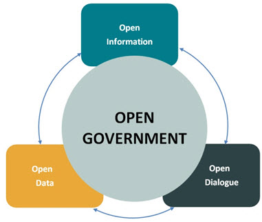

info@tgif.net
info@tgif.netAbout Us
Openness, accountability, and honesty define government transparency. In a free society, transparency is government's obligation to share information with citizens. It is at the heart of how citizens hold their public officials accountable. Here at TGIF we believe that government should be transparent.
Governments exist to serve the people. Information on how officials conduct public business and spend taxpayer money must be readily available and easily understood. This transparency allows good and just governance. Transparency promotes accountability and provides information for citizens about what their Government is doing.
We also believe that government should be participatory. Public engagement enhances the Government's effectiveness and improves the quality of its decisions. Knowledge is widely dispersed in society, and public officials benefit from having access to that dispersed knowledge. We invite you to use our site to become actively engaged in American government.
TGIF works to disclose information in forms that the public can readily find and use. We solicit public feedback to identify information of greatest use to the public.
Background History of Government Transparency
In the West, the idea that government should be open to public scrutiny and susceptible to public opinion dates back at least to the time of the Enlightenment, when many philosophes made an attack on absolutist doctrine of state secrecy, a core part of their intellectual project. The passage of formal legislative instruments to this end can also be traced to this time with Sweden, for example, (which then included Finland as a Swedish-governed territory) enacting free press legislation as part of its constitution (Freedom of the Press Act, 1766). This approach, and that of the philosophes more broadly, is strongly related to recent historiography on the eighteenth-century public sphere.
Influenced by Enlightenment thought, the revolutions in America (1776) and France (1789), freedom of the press enshrined provisions and requirements for public budgetary accounting and freedom of the press in constitutional articles. In the nineteenth century, attempts by Metternichean statesmen to row back on these measures were vigorously opposed by a number of eminent liberal politicians and writers, Bentham, Mill and Acton prominent among the latter.
Open government is widely seen to be a key hallmark of contemporary democratic practice and is often linked to the passing of freedom of information legislation. Scandinavian countries claim to have adopted the first freedom of information legislation, dating the origins of its modern provisions to the eighteenth century and Finland continuing the presumption of openness after gaining independence in 1917, passing its Act on Publicity of Official Documents in 1951 (superseded by new legislation in 1999).
The United States passed its Freedom of Information Act (FOIA) in 1966, FOIAs, Access to Information Acts (AIAs) or equivalent laws were passed in Denmark and Norway in 1970.